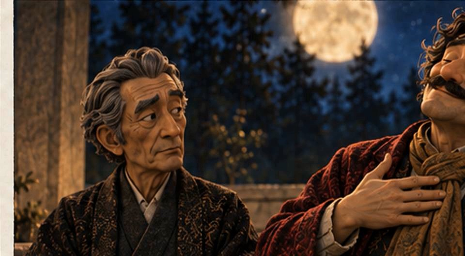
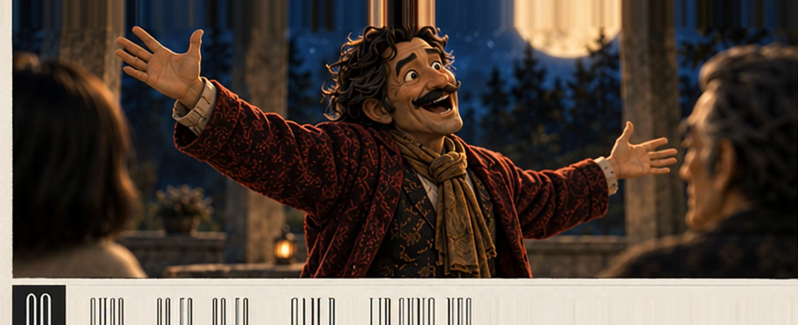

共有資料の一覧 ／ 確認ページ #583 卵劇場EP01を安いモデルで作り直し（H3 Max Turbo・全18カット動く版）
#583 卵劇場EP01を安いモデルで作り直し（H3 Max Turbo・全18カット動く版）
2026-09-06 実装・本番(GitHub Pages)反映まで実測確認（1回目の差し戻し→動画を直接このページに埋め込み、サインイン不要で再生できる形に直して再提出）
セリフ音声を先に全部作ってから、安いモデル(minimax/h3-max-turbo)で18カットを480P試作→768P本番の順に生成。人物が実際に瞬き・首・口を動かす形に作り直した。Seedance・ffmpegは不使用。18カットはこのページ内で直接再生できる（Googleドライブのサインイン要求を回避）。
② 数字
18カット生成できた本番カット数
約240円かかった実費(音声+試作+本番の合計)
9月7日H3 Max Turbo割引終了日(公式ページで確認済み)
③ 通しで観る（本番・768P・18カット自動連続再生）
音は入っています。ブラウザの自動再生制限で音が出ない場合は、一度▶を押してください。1カット終わると自動で次のカットへ進みます（18カット連続＝約80秒）。
前と後（実データでのスクリーンショット）
前(旧EP01・15秒版)
後(新EP01・768P本番SH09)
④ 押せるリンク
正直な補足（隠さず書く）
・18カットは1本のfinal.mp4へ物理結合していません。ffmpeg禁止・fal側にも結合機能が無いため、代わりにこのページで18本を自動連続再生する形にしました（音声はカットごとに焼き込み済み）。
・Eagleへの取り込みは今回未実施です。Eagleアプリを起動すると、たまごさんが今使っている画面の前に出てきてしまう可能性があり、憲法「画面を奪わない」を優先して見送りました。動画本体はGoogleドライブ「卵劇場EP01_完成」フォルダに保存済みです。
・費用は目標100〜150円を超えましたが、上限300円は守っています。